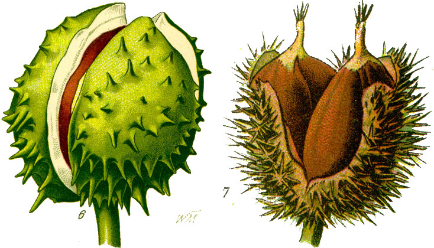

I think that I shall never see
A billboard lovely as a tree.
Indeed, unless the billboards fall
I’ll never see a tree at all.
1 Introduction
Every spring, the Callery pear down the street from me displays a magnificent panoply of white blossoms, and releases… let’s say a distinct odor. A few months later, the tree of heaven in my backyard drops an incredible torrent of flowers onto my porch, and within a few months, another torrent of seed pods (this tree has it’s own smell which is marginally less unpleasant). It’s a subtle difference between a street lined with, say, honeylocusts and one lined with sycamores, but trees really do go a long way in defining the character of a place, making them a crucial consideration in urban planning.
Like many cities, Cambridge has long maintained a dataset of all municipal trees, including the species, location, date planted, and diameter.1 By exploring this data, we can see what trends and patterns emerge, and learn something about the arboreal life of our cities.
2 Cleaning
Although the dataset does seem to cover every public tree, much of the data is missing. For example, 83% of trees are missing the date they were planted, presumably at least in part because they predate the record system (a few of those that do list dates are from the 1970s).
There are many spurious values as well. Besides misaligned species names (to be discussed in sec. 3), there are several misspelled genera (e.g., “Planatus” for Platanus). The diameter of each tree is listed, but the highest values are 154, 715, 745, 915, and 945 inches, corresponding respectively to about 13, 60, 62, 76, and 79 feet (the stoutest tree in the world is only 46 feet in diameter), casting all values into some suspicion. The dataset also lists properties such as number of trunks—one katsura tree has ten, and two, a Japanese tree lilac and a serviceberry have eleven—and things of municipal importance, such as whether there are overhead wires, or whether the roots are emerging through the sidewalk.
I also included data about invasiveness, by grabbing the list of species considered invasive in Massachusetts, copying the scientific names to a text file, and merging.
invasive_species = pd.read_csv("prohibited-species.txt")
invasive_species["Invasive"] = True
trees = pd.merge(
left = trees,
right = invasive_species,
how = "left",
on = ["Genus", "species"]
)
trees["Invasive"].fillna(False, inplace=True)The SiteType column helpfully tells us whether the tree is, in fact, a tree at all, or a stump, a plot being prepared for a tree, etc. After cleaning, I removing all of the latter cases—although really, the cleaning was a process ongoing until the end.
3 Varieties
The obvious first thing to do after cleaning is look at what varieties line the city’s streets. fig. 1 shows the most popular genera as recorded in the dataset (their corresponding common names are in Appendix A).
However, just knowing that the streets are lined with maples (Acer spp.) doesn’t tell us if they are towering, stately silver maples (A. saccharinum), or splendiferous red maples (A. rubrum), or invasive Norway maples (A. platanoides), nor does knowing there are over 3,000 oaks (Quercus spp.) cast light on which of the over 600 species they comprise. We can break this graph down further by species (fig. 2).
There are some interesting takeaways here. For instance, not a single public apple tree (genus Malus) has been identified for species. This indicates that the data was not logged at the time of planting; possibly, the species were identified by sight in a later survey (ornamental apple trees are typically hard-to-identify hybrids). Some of the “unknown species” labels are clearly in error. Liquidambar, for example, contains only four species, only one of which (L. styraciflua) is grown ornamentally in the U.S., and is easily distinguished from its relatives by its five-pointed leaves.2 More alarmingly, Ginkgo biloba is the only extant species in its entire class (a sister clade to the conifers), but 79 specimens are missing species information, and one is apparently of Ginkgo triacanthos! Presumably, city arborists have not discovered a new living fossil, but rather this row has gotten mixed up somehow (maybe during merging) with a honeylocust, Gleditsia triacanthos. We also see such botanical novelties as Ulmus cordata, Tilia calleryana, and, amusingly, Acer acerifolia—literally, a maple-leafed maple.
Besides the missing and spurious data, we see that over a third of city-planted maples are Norway maples, which are now illegal in Massachusetts due to their propensity to crowd out native species. In all, 2,282 trees considered invasive, representing five species, are present in the dataset.
Invasive plants are not the only menace to biodiversity. We are lucky to have over a thousand elms in Cambridge—after Dutch elm disease ravaged populations in the 1960s and ’70s, disease-resistant cultivars of Ulmus americana were developed which, along with fungicide, managed the destruction. The chestnut blight fungus, introduced from East Asia around the turn of the 20th century, has made the American chestnut (Castanea dentata) all but extinct, with a onetime population of several billion dwindling to a few hundred today. So I was surprised to see four trees in the genus Castanea in the dataset, but less surprised when three turned out to be misidentified horse chestnuts (Aesculus hippocastanum),3 and the fourth was… wait for it… a Norway maple.
4 Mapping
Every tree in the dataset has an associated latitude and longitude. Indeed, the coordinates given for each tree display incredible precision, giving no fewer than 15 decimal places, making them accurate to about 100 picometers, or approximately an atomic radius (I have no idea how they chose which atom of the tree to use as a reference). In order to map trees against Cambridge’s basemap shapefiles, I used PyShp to parse the shapefiles and PyCRS and PyProj to convert from WGS84 (i.e., standard latitude and longitude) to NAD 1983, the coordinate system used in the shapefiles.
from pyproj import Transformer
# Convert between coordinate systems
transformer = Transformer.from_crs(
# WGS84 (EPSG:4326)
"+proj=longlat +a=6378137.0 +rf=298.257223563 +pm=0 +nodef",
# NAD 1983 StatePlane Massachusetts Mainland FIPS 2001 Feet
"+proj=lcc +lat_1=41.71666666666667 +lat_2=42.68333333333333 " +
"+lat_0=41 +lon_0=-71.5 +x_0=200000 +y_0=750000.0000000001 " +
"+ellps=GRS80 +datum=NAD83 +to_meter=0.3048006096012192 no_defs"
)
# Convert coordinates of invasive trees and plot on basemap
for label in invasives["label"].unique():
plt.scatter(
*transformer.transform(
invasives[invasives["label"] == label]["lon"].to_list(),
invasives[invasives["label"] == label]["lat"].to_list()
),
)In fig. 3, we can see the locations of invasive species of tree. Norway maples (Acer platanoides) are predictably strewn across the city, but we see clusters of trees of heaven (Ailanthus altissima), and a few sizeable black locusts (Robinia pseudoacacia), their impressive diameters indicating older trees. Of course, many more specimens of these noxious species exist on private land, and many of the worst invasive species are not trees at all, such as reeds (Phragmites australis) and garlic mustard (Alliaria petiolata).
Acer platanoides (2,121)
Robinia pseudoacacia (55)
Phellodendron amurense (54)
Ailanthus altissima (50)
Rhamnus cathartica (2)
To see what trees are popular in different areas, I downloaded the neighborhood boundary shapefiles, and used Shapely to categorize each latitude–longitude pair as being in one of the resulting polygons (dismayingly, although the dataset has a Neighborhood column, it doesn’t contain a single data point). By filtering, we can see what the most popular species is in each neighborhood.
Gleditsia triacanthos
Acer (unknown species)
Acer rubrum
Fraxinus americana
Acer platanoides
We can get an even more granular look by plotting each individual tree:
Gleditsia triacanthos
Acer (unknown species)
Acer rubrum
Fraxinus americana
Acer platanoides
Here we see some interesting patterns. The unidentified maples so popular around MIT almost exclusively line the Charles River embankment. The white ashes (Fraxinus americana) in the Cambridge Highlands are concentrated in the Lusitania Woods by Fresh Pond.
5 Planting dates
As mentioned above, only 17% of trees have a plant date listed, making it difficult to find trends. Of course, it is still interesting to examine the data we have—fig. 6 shows recorded plantings for the genera in fig. 1 starting in 2007 since there are only a handful of data points before then.
In particular, it is to determine when invasives were planted—of the 2,282 invasive trees in the dataset, only five Norway maples have a date listed. This is unsurprising—the “invasiveness” of invasives is precisely their ability to aggressively reproduce. However, even of these, we can see in fig. 7 that two were planted in 2013 and 2014, respectively, well after the 2006 law prohibiting such species took effect.
Law banning invasive species in effect
There are some interesting trends visible in fig. 6—a recent fad for magnolias, a steady increase in serviceberry plantings (Amelanchier spp.), and spikes in pear tree plantings (nearly all of which are Callery pears, Pyrus calleryana) in 2009 and 2017—although given the paucity of data, it is impossible to say if they are real.
We can get another sense of trends by looking at location, rather than genus.
2007
2020
We can see several strings of orange and yellow where a whole row of trees was planted all at once. In addition, unsurprisingly, the largest trees tend to be the oldest, shown in purple.
There is much more I would like to do with this data—and much more, and cleaner, data I’d like to have—but I’ve learned a lot about Cambridge’s trees, especially about the prevalence of invasive species on my local streets.
Appendix A: Common names of trees
| Genus | Common name | Family (APG IV4) | Population |
|---|---|---|---|
| Abies | fir | Pinaceae | 46 |
| Acer | maple | Sapindaceae | 4,875 |
| Aesculus | horse chestnut | Sapindaceae | 84 |
| Ailanthus | tree of heaven | Simaroubaceae | 67 |
| Amelanchier | serviceberry | Rosaceae | 499 |
| Betula | birch | Betulaceae | 374 |
| Carpinus | hornbeam | Betulaceae | 205 |
| Carya | hickory | Juglandaceae | 7 |
| Castanea | chestnut | Fagaceae | 4 |
| Catalpa | catalpa | Bignoniaceae | 27 |
| Cedrus | cedar | Pinaceae | 2 |
| Celtis | hackberry | Cannabaceae | 155 |
| Cercidiphyllum | katsura | Cercidiphyllaceae | 79 |
| Cercis | redbud | Fabaceae | 169 |
| Chionanthus | fringetre | Oleaceae | 5 |
| Cladrastis | yellowwood | Fabaceae | 122 |
| Cornus | dogwood | Cornaceae | 504 |
| Corylus | hazel | Betulaceae | 3 |
| Cotinus | smoketree | Anacardiaceae | 16 |
| Crataegus | hawthorn | Rosaceae | 82 |
| Enkianthus | enkianthus | Ericaceae | 1 |
| Eucommia | Chinese rubber tree | Eucommiaceae | 51 |
| Fagus | beech | Fagaceae | 130 |
| Fraxinus | ash | Oleaceae | 1,427 |
| Ginkgo | ginkgo | Ginkgoaceae | 467 |
| Gleditsia | honeylocust | Fabaceae | 2,637 |
| Gymnocladus | coffeetree | Fabaceae | 171 |
| Halesia | silverbell | Styracaceae | 9 |
| Hamamelis | witch hazel | Hamamelidaceae | 46 |
| Ilex | holly | Aquifoliaceae | 33 |
| Juglans | walnut | Juglandaceae | 19 |
| Juniperus | juniper | Cupressaceae | 104 |
| Koelreuteria | golden rain tree | Sapindaceae | 106 |
| Laburnum | golden rain | Fabaceae | 1 |
| Larix | larch | Pinaceae | 17 |
| Liquidambar | sweetgum | Altingiaceae | 377 |
| Liriodendron | tuliptree | Magnoliaceae | 177 |
| Maackia | maackia | Fabaceae | 26 |
| Magnolia | magnolia | Magnoliaceae | 244 |
| Malus | apple | Rosaceae | 762 |
| Metasequoia | dawn redwood | Cupressaceae | 49 |
| Morus | mulberry | Moraceae | 33 |
| Nyssa | tupelo | Nyssaceae | 25 |
| Ostrya | hophornbeam | Betulaceae | 40 |
| Oxydendrum | sourwood | Ericaceae | 15 |
| Parrotia | ironwood | Hamamelidaceae | 8 |
| Phellodendron | cork tree | Rutaceae | 59 |
| Picea | spruce | Pinaceae | 105 |
| Pinus | pine | Pinaceae | 964 |
| Platanus | sycamore | Platanaceae | 1,244 |
| Populus | poplar/aspen | Salicaceae | 192 |
| Prunus | cherry/plum | Rosaceae | 1,092 |
| Pseudotsuga | Douglas fir | Pinaceae | 11 |
| Ptelea | hoptree | Rutaceae | 1 |
| Pyrus | pear | Rosaceae | 1,072 |
| Quercus | oak | Fagaceae | 3,015 |
| Rhamnus | buckthorn | Rhamnaceae | 4 |
| Robinia | black locust | Fabaceae | 59 |
| Salix | willow | Salicaceae | 38 |
| Sassafras | sassafras | Lauraceae | 1 |
| Sciadopitys | umbrella pine | Sciadopityaceae | 1 |
| Sorbus | rowan | Rosaceae | 1 |
| Stewartia | tea tree | Theaceae | 19 |
| Styphnolobium | pagoda tree | Fabaceae | 357 |
| Styrax | storax | Styracaceae | 1 |
| Syringa | lilac | Oleaceae | 422 |
| Taxus | yew | Taxaceae | 26 |
| Thuja | arborvitae | Cupressaceae | 142 |
| Tilia | linden | Malvaceae | 1,544 |
| Tsuga | hemlock | Pinaceae | 101 |
| Ulmus | elm | Ulmaceae | 1,204 |
| Viburnum | viburnum | Adoxaceae | 20 |
| Zelkova | zelkova | Ulmaceae | 627 |
They’ve also compiled it into quite a nice browsable map.
OpenTrees.org maintains a collection of such datasets (possible fodder for future projects) as well as a browsable map of all of them.↩
An unrelated tree whose toxic fruit (left) looks very similar to that of a true chestnut, C. sativa (right) (sources: 1, 2).
↩
The Angiosperm Phylogeny Group, “An Update of the Angiosperm Phylogeny Group Classification for the Orders and Families of Flowering Plants: APG IV,” Botanical Journal of the Linnean Society 181, no. 1 (May 2016): 1–20, doi:10.1111/boj.12385.↩
{kind=link}
{kind=link}
{kind=link}